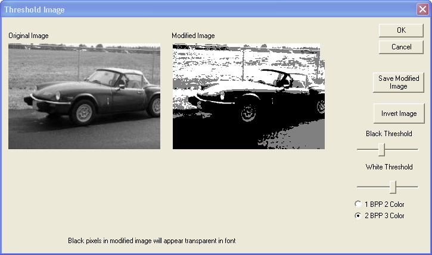

For display by BOB-4 modules, bitmap image files must be converted into BOB-4 font (.b4f) files. Imported image size cannot exceed 255x255 pixels. Imported images are converted to single-character fonts which may then be downloaded to BOB-4 and stored in flash memory. The BOB-4 Conscriptor can import bitmap graphics files of the following types:
bmp,
ico, jif, jfif, jpeg, jpg, jpg, koa, koala, pbm, pcd, pcx, pgm, png, ppm, ras,
targa, tga, tif, tiff, ttf
Image Conversion
In order to be displayed
by BOB-4, the color depth of an image must be either two-color (one bit per
pixel; 1bpp) or three-color (2bpp). Monochrome
or 'binary' 1bpp images may be imported directly. In all other cases, imported
images are first converted to 8-bit greyscale and displayed in the left pane
of the "Threshold Image" dialog. Threshold levels (white level for
1bpp; white and black level for 2 bpp) must then be manually adjusted using
the “White Threshold” and “Black Threshold” sliders
for best visual results in the right pane. For
a 2bpp image, any color value below the black threshold is rendered black (local
mode) or transparent (genlock mode). Any color value above the white threshold
is rendered white. Values between the thresholds are rendered grey (local mode)
or halftone (genlock mode). Black and white pixels may be reversed with the
“Invert Image” button. Imported
images may optionally
be saved as BMP files with the “Save Modified Image” button, but
BMP files are not directly usable as BOB-4 font files.
Saving and Downloading
to BOB-4
After clicking the Threshold
Image “OK” button, Font Editor will be activated. In Font
Editor, you must save the converted image as a font file. This file
can then be downloaded to BOB-4 through the Serial-->Download-->Font menu.
Image fonts may be combined with other BOB-4 font files and stored in a single
memory device. To make BOB-4 display the image, select the desired image font
(see z command) and send BOB-4 a space <SP> character
(ASCII 32 or 0x20).
NOTE: Horizontal compression
of images will occur with BOB-4's default display settings. To fix this, reconfigure
BOB-4 to yield 'square pixels' (4:3 aspect ratio), or pre-compensate images
before importing. In the BOB-4
Application Guide, see v command (n=20~23).